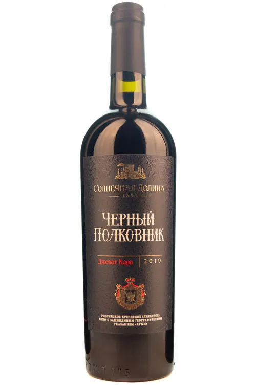

Лонгрид · шесть глав · 12 минут
ЧёрныйДоктор
История сорта, подвала, построенного в 1888 году, и вина, которое три года не выходит из дуба.
«Чёрный Доктор» — устоявшееся название сорта Эким Кара и крымский топоним. Лечебных свойств вину не приписывается: это алкогольная продукция.
Листайте вниз
Глава I
Эким Кара: имя старше винодельни
Автохтон юго-восточного Крыма, чьё имя долина носит дольше, чем существует здешнее промышленное виноделие.
Эким Кара растёт в юго-восточном Крыму дольше, чем существует здешнее промышленное виноделие. Это автохтон — сорт, который никто сюда не привозил: он был найден на месте, среди лоз, доставшихся долине от генуэзского времени. В крымскотатарском «эким» — лекарь, «кара» — чёрный. Отсюда и русское имя: Чёрный Доктор.
Само имя и породило крымское предание о «чёрном лекаре» — мы пересказываем его как фольклор и не более того: вино не является лекарством и не обладает лечебными свойствами.1
Ягода у Эким Кара мелкая, кожица толстая, сок почти не окрашен — цвет приходит только от долгой мацерации. Урожайность низкая: сорт отдаёт мало, но отдаёт концентрированно. Именно поэтому он веками оставался местным, домашним — и почти исчез в XX веке.
В купаже «Чёрного Доктора» Эким Кара занимает 75 %. Остальное — два соседних автохтона: Джеват Кара (10 %) и Кефесия (15 %). Возраст лоз — свыше 35 лет.2
«Там, где рос шиповник, виноградник будет давать хорошие урожаи, а вино будет высокого качества».
Лев Голицын о капсельских земляхГлава II
1888: Голицын и подвалы
Имение «Архадерессе» и первый в Российской империи завод по выдержке марочных десертных вин.
В 1888 году Лев Голицын убедил светлейшего князя Константина Александровича Горчакова — сына последнего канцлера России — купить Токлукское имение за 100 тысяч рублей. Сделку оформили заочно, в Петербурге. Так появилось имение «Архадерессе».
Формальный хозяин передал Голицыну полное управление. Тот воспользовался полномочиями с размахом: за годы работы имение обошлось Горчакову в 1 миллион 500 тысяч рублей золотом. Взамен долина получила более 100 гектаров промышленных виноградников с ветрозащитными полосами из дикого миндаля.
Главное, что Голицын здесь построил, — первый в тогдашней Российской империи завод по выдержке марочных десертных и крепких вин. Спустя девять лет он заложит первый подвал Массандры; в Судакской долине подвалы «Архадерессе» появились раньше.
Партии шампанских виноматериалов здесь не удались. Зато появился опыт, из которого выросли высококачественные белые и красные десертные вина — прототипы будущих марок «Солнечная Долина» и «Чёрный Доктор».
История закончилась ссорой. Горчаков одиннадцать лет исправно посылал деньги, ни разу не побывав в имении. В октябре 1899 года он приехал впервые, был ошеломлён пустынным пейзажем, отстранил Голицына от управления и велел новому управляющему не пускать князя на территорию его бывших владений.
Именно Л. С. Голицын впервые на капсельских землях произвёл закладку промышленных виноградников с использованием имеющегося древнего генуэзского фонда аборигенных сортов юго-восточного Крыма.
Из истории предприятия
Подвалы, построенные для выдержки, пережили и владельцев, и страну, в которой были построены.
Архадерессе · с 1888 годаГлава III
Забвение и возвращение
К 1929 году виноградники были абсолютно запущены. Сорт вернули в производство только во второй половине века.
После революции имения Голицына и Горчакова объединили в один совхоз в ведении Южсовхоза. К 1929 году виноградники были абсолютно запущены; восстанавливать их начали только в 1936-м. Затем война — крымское виноделие фактически перестало существовать.
Перелом наступил в 1956 году, когда «Архадерессе» вошло в совхоз «Солнечная Долина» вместе с колхозом им. Калинина (Токлук, ныне Богатовка). Тогда же началась работа, ради которой стоит помнить эти скучные административные даты: восстановление аборигенных сортов.
В списке восстановленных — Сары Пандас («рыжий пандас»), Эким Кара («чёрный доктор»), Капитан Кара, Полковник Кара, Кефесия, Сале Аганым Карасы («чёрный дядюшка Сале»). Одновременно строились мощности по переработке и выдержке марочных виноматериалов — без них десертное вино из Эким Кара просто не существует.
В 1963 году село Лагерное официально переименовали в Солнечную Долину. В 1974-м совхоз объединили с заводом шампанских вин «Новый Свет», в 1981-м снова разделили. Сорт всё это время оставался на склонах.
Глава IV
Урожай: одна бутылка
Что происходит с виноградом от ручного сбора до момента, когда бутылку кладут в энотеку.
Сбор ручной — иначе на старых лозах нельзя. Эким Кара собирают поздно, когда сахаронакопление доходит до значений, при которых будущее вино удержит 160 граммов сахара на дециметр кубический и 16 % спирта. Ягод мало: сорт малоурожайный, тираж ограничен по определению.
Дальше — мацерация: цвет «Чёрного Доктора» весь приходит из кожицы. Потом спиртование, остановка брожения на нужном сахаре — и дуб. Выдержка в дубовых бочках — не менее трёх лет, у коллекционных релизов затем следует многолетнее созревание в бутылке.2
Из бочки вино выходит гранатовым с рубиновыми бликами. Через пятнадцать-двадцать лет в бутылке рубин уходит в тёмный янтарь по краю бокала — это и есть та разница, ради которой существует вертикальная дегустация.
Базовый релиз выпускается в пяти форматах — от 0,25 до 1,4 литра, самая широкая линейка объёмов в каталоге. Коллекционные и сувенирные релизы — только 0,75.
Каменный зал, длинный стол и пять бокалов одного вина. Урожаи 1990–2003 годов открывают только здесь.
Дегустационный зал · МиндальноеГлава V
Вертикаль
Одно вино в разных годах. Двигайте год — меняются цвет, аромат и бутылка.


Свет витрины меняется вместе с годом
2000
Чёрный Доктор Солнечной Долины
Насыщенный рубиновый с тёмными янтарными бликами, соответствующими продолжительной выдержке.
Цвет в бокале
| Год | Вино | Сорта | Спирт / сахар | Объём | Вертикаль 2027 · энотека6 |
|---|---|---|---|---|---|
| 1996 | Чёрный Полковник, коллекция3 | Одесский чёрный, бастардо магарачский, каберне совиньон, джеват кара, кефессия | 17,5 % · 110 г/дм³ | 0,75 л | В вертикали остаток энотеки — 9 бут. |
| 2000 | Чёрный Доктор Солнечной Долины, коллекция | Эким кара, джеват кара, кефессия | 16 % · 160 г/дм³ | 0,75 л | В вертикали остаток энотеки — 14 бут. |
| 2001 | Чёрный Доктор Солнечной Долины, коллекция | Эким кара, джеват кара, кефессия | 16 % · 160 г/дм³ | 0,75 л | В вертикали остаток энотеки — 22 бут. |
| 2013 | Чёрный Доктор, сувенирный «Хеопс» | Эким кара, кефессия, джеват кара | 16 % · 160 г/дм³ | 0,75 л | В вертикали остаток энотеки — 31 бут. |
| 2017 | Чёрный Доктор Солнечной Долины, базовый релиз4 | Эким кара, кефессия, джеват кара | 16 % · 160 г/дм³ | 0,25–1,4 л | В вертикали есть в фирменном магазине |
Ближайшая вертикаль 12 октября 2026 · свободно 4 места из 10. Следующая — 9 ноября 2026, свободно 10 из 10. Остатки энотеки и свободные места — демонстрационные, подтверждаются учётом энотеки при обработке заявки.6
Глава VI
Как пить
Вино не требует гастрономического сопровождения. Всё остальное — по желанию.
Температура
16–18°
Холоднее — закроется аромат, теплее — вперёд выйдет спирт.
Бокал
Тюльпан
Небольшой тюльпанообразный бокал для креплёных вин. Наливать на треть.
Аэрация
15 мин
Букет коллекционных лет развивается при аэрации: чернослив и шоколад уступают место ванили, кизилу и тёрну.
К чему
Ни к чему
Самодостаточно. При желании — чёрный шоколад и десерты на его основе, сладковатые орешки (фундук, кешью), сыры с голубой плесенью.
Приложение
Как отличить подлинник
«Чёрный Доктор Солнечной Долины» — вино одного производителя и одной долины. Три проверки перед покупкой: одна из них делается за десять секунд.
1
QR на контрэтикетке
Отсканируйте QR — откроется цифровой паспорт бутылки: партия, год розлива, ЗГУ, сорта, спирт и сахар. Если паспорт не открывается или расходится с этикеткой — это не наша бутылка.
2
Полное имя
На этикетке — «Чёрный Доктор Солнечной Долины». Производитель — АО «Солнечная Долина», с. Миндальное, Судак. Всё остальное — ЗГУ «Крым», сорта и цифры — сверяется по паспорту, дублировать их здесь незачем.
3
Где покупать
Фирменные магазины винодельни, дегустационный зал в Миндальном и авторизованная розница. Коллекционные годы — только на винодельне, лично и офлайн.
Служебная ремарка Перечень защитных признаков (капсула, акцизная марка, номер партии) финализируется по данным производства и проходит юридическую вычитку до публикации.
Вертикальная
дегустация
Пять лет одного вина в подвале, где его выдерживали. Ведёт винодел. Группа 6–10 гостей, продолжительность около двух часов.
- Подвал. Спуск в выдержку «Архадерессе»: бочки, буты, температура, которая не менялась с 1888 года.
- Пять бокалов. От базового релиза к коллекционным годам — в обратном порядке, от молодого к старшему.
- Разбор. Винодел объясняет, что делает с вином дуб, а что — бутылка; что уходит из цвета и что приходит в букет.
- Энотека. Ряды, где лежат урожаи 1990–2003 годов. Здесь же — покупка коллекционных бутылок, лично и офлайн.
Мы принимаем заявку и связываемся с вами по телефону +7 (978) 956-33-22. 25 000 ₽ — стоимость дегустационной программы с гостя, а не цена вина. Оплата дегустации — на месте или по счёту. Вино продаётся только офлайн, в фирменном магазине винодельни.
- Историческое предание приводится как элемент крымского фольклора. Вино не является лекарственным средством; чрезмерное употребление алкоголя вредит вашему здоровью. ↩
- Доли сортов (75 / 10 / 15 %), возраст лоз свыше 35 лет и срок выдержки «в дубовых бочках не менее 3 лет» приведены по карточке вина на действующем сайте производителя. Эти данные подлежат подтверждению технологической службой перед публикацией. ↩
- 1996 год в вертикали представлен «Чёрным Полковником» — соседним креплёным вином той же энотеки: коллекционного «Чёрного Доктора» этого урожая в действующем каталоге нет. Год оставлен в вертикали как точка отсчёта бутылочной выдержки и обозначен явно.
- Базовый релиз выпускается без указания года урожая на этикетке; 2017 приведён по данным карточки каталога. Для публикации год уточняется у производства.
- Суммы «100 000 ₽ за Токлукское имение (1888)» и «1 500 000 ₽ золотом за годы управления Л. С. Голицына», а также 100+ га виноградников и 112 десятин к 1908 году приведены по разделу «История» официального сайта АО «Солнечная Долина» (sunvalley1888.ru) — оттуда же формулировка «первый в тогдашней Российской империи завод по выдержке марочных десертных и крепких вин» и сведения о восстановлении аборигенных сортов после 1956 года. Архивная сверка (ГА РК, фонд имения «Архадерессе») запрошена; до её завершения цифры цитируются как данные производителя. ↩
- Остатки энотеки по годам и число свободных мест на ближайших вертикалях — демонстрационные значения для макета. На рабочем сайте колонка подключается к учёту энотеки и календарю дегустационного зала; при обработке заявки наличие подтверждается менеджером. ↩
Политика конфиденциальности — выдержка для этой формы
Оператор: АО «Солнечная Долина», 298031, Республика Крым, г. Судак, с. Миндальное. Состав данных: имя и номер телефона, по желанию — адрес электронной почты и комментарий к заявке. Цель: обработка заявки на вертикальную дегустацию — звонок, согласование даты и состава группы. Срок: до отзыва согласия, но не дольше одного года с даты дегустации. Передача третьим лицам: не осуществляется; данные обрабатываются на серверах на территории Российской Федерации. Отзыв согласия: письмом на адрес оператора или по телефону +7 (978) 956-33-22; согласие на рассылку отзывается отдельно, в один клик из любого письма.
Макет для питча: полный текст политики готовится юридической службой заказчика и размещается отдельной страницей до публикации сайта.